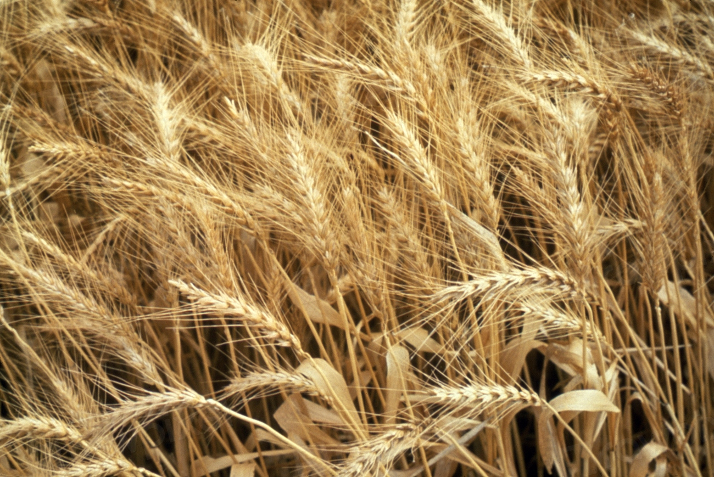

麦つむぎのこと
「麦を紡ぐ」という屋号について
「麦つむぎ」という屋号には、「麦を紡ぐ」という言葉を込めています。小麦という一粒の実が、粉になり、生地になり、一本のパンに仕立てられていく。その道筋を、糸を紡ぐ手仕事に重ねて名付けました。
小麦と、手仕事について
粉をふるい、水を含ませ、こね、発酵を待つ。工程そのものは多くのパン屋と変わらないかもしれませんが、ひとつひとつの時間を丁寧に重ねることを大切にしています。使用している小麦の産地や製法の詳細については、現在情報を整理中です。確定した内容は今後こちらでご案内いたします。
焼き上がりの時間について
焼き上がりの時間帯や日々の品揃えは、仕込みの状況によって変わります。営業時間・定休日についても現在確認中です。最新の情報はInstagram(@mugitumugi)でご案内していますので、お出かけ前にご確認ください。
店主より
一本の糸を紡ぐように。
一本の糸を紡ぐように、パンづくりの時間を積み重ねています。店先でお会いできる日を楽しみにしています。